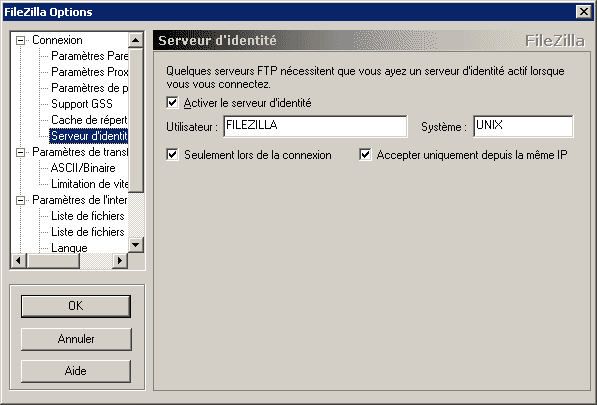

Serveur d'Identification
Vue d'ensemble:
Certains serveurs requièrent de leurs utilisateurs l'obligation d'utiliser un autre serveur actif comme méthode supplémentaire d'identification. FileZilla est fourni avec un serveur d'identification intégré qui peut être activé dans la section Serveur d'Identité.

Activer le Serveur d'Identité
Cette option active le serveur d'identité. Vous devez éditer les champs de texte avec votre ID utilisateur et les références de votre système. Ne soyez pas troublé de voir UNIX comme système, c'est simplement la valeur par défaut que la plupart des serveurs d'identification utilisent, incluant ceux sous Windows.
Activer seulement lors d'une connexion
Si cette option est sélectionnée, le serveur d'identification ne sera activé que pendant l'établissement de la connexion. Cependant, certains serveurs peuvent avoir recours à un serveur d'identification actif dans différentes situations, et dans ce cas, désactivez simplement cette option.
N'accepter les requêtes que du même IP
Quand cette fonction est activée, seules les requêtes en provenance du même hôte comme le serveur auquel vous vous connectez / vous vous êtes connecté obtiendront une réponse.